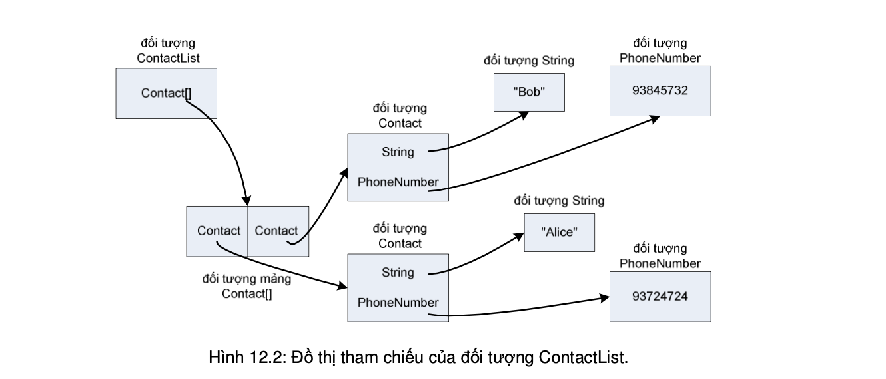

Chuyện gì xảy ra khi một đối tượng bị chuỗi hóa?
Các đối tượng tại heap có trạng thái là giá trị của các biến thực thể của đối tượng. Các giá trị này tạo nên sự khác biệt giữa các thực thể khác nhau của cùng một lớp. Đối tượng bị chuỗi hóa lưu lại các giá trị của các biến thực thể, để sau này có thể khôi phục lại một đối tượng giống hệt tại heap.
Ví dụ, một đối tượng b kiểu Box có hai biến thực thể thuộc kiểu cơ bản width = 37 và height = 70. Khi gọi lệnh os.writeObject(b), các giá trị đó được lấy ra và bơm vào dòng, kèm theo một số thông tin khác, chẳng hạn như tên lớp, mà sau này máy ảo Java sẽ cần đến để khôi phục đối tượng. Tất cả được ghi vào file ở dạng nhị phân.
Đối với các biến thực thể kiểu cơ bản thì chỉ đơn giản như vậy, còn các biến thực thể kiểu tham chiếu đối tượng thì sao? Nếu như một đối tượng có biến thực thể là tham chiếu tới một đối tượng khác, và chính đối tượng đó lại có các biến thực thể?
Khi một đối tượng được chuỗi hóa, tất cả các đối tượng được chiếu tới từ các biến thực thể của nó cũng được chuỗi hóa. Và tất cả các đối tượng mà các đối tượng đó chiếu tới cũng được chuỗi hóa, ... Toàn bộ công việc đệ quy này được thực hiện một cách tự động.
Ta đã nói về khái niệm và lý thuyết của việc chuỗi hóa đối tượng. Vậy về mặt viết mã thì như thế nào? Không phải đối tượng thuộc lớp nào cũng nghiễm nhiên chuỗi hóa được. Nếu ta muốn các đối tượng thuộc một lớp nào đó có thể chuỗi hóa được, ta phải cho lớp đó cài đặt interface Serializable.
Serializable là một interface thuộc loại dùng để đánh dấu (dạng marker hoặc tag). Các interface loại này không có phương thức nào để cài. Mục đích duy nhất của Serializable là để tuyên bố rằng lớp cài nó có thể chuỗi hóa được. Nói cách khác là có thể dùng cơ chế chuỗi hóa để lưu các đối tượng thuộc loại đó. Nếu một lớp chuỗi hóa được thì tất cả các lớp con cháu của nó đều tự động chuỗi hóa được mà không cần phải khai báo implements Serializable. (Ta còn nhớ ý nghĩa của quan hệ IS-A.)
Nếu một lớp không thuộc loại chuỗi hóa được, chương trình nào gọi phương thức writeObject cho đối tượng thuộc lớp đó có thể biên dịch không lỗi nhưng khi chạy đến lệnh đó sẽ gặp ngoại lệ NonSerializableException.